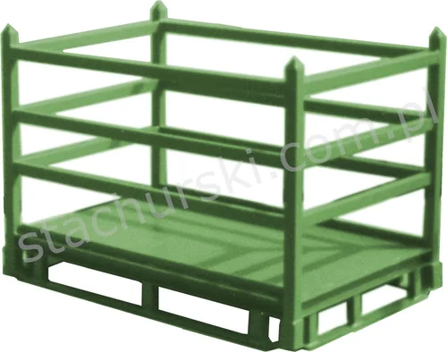

PALLETS / 04 MODELS OFFICIAL CATALOGUE FAMILY
Pallets
for glass & windows
Purpose-built steel pallets and carriers for production, storage and transport.
4 MODELS / OPTIONS·STACHURSKI / 1974
— IN THIS RANGE
Models and options in the official range
Product references follow Stachurski’s published catalogue. Confirm current availability and configuration with the team.
S↗
PALLETS · PRODUCT FAMILY
Have a model in mind?
Send the model code and your handling requirements to request a tailored quotation.